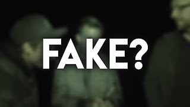

Jocke och Jonnas spökvideos fake?
Under senaste veckan har Jocke och Jonnas söpkvideos tydligen bevisats som fake eller??? Enligt mig så är det bara nånsens att det ska bli en sån stor fråga. Det hela började med att Jocke startade en facebook live under inspelningen. Ingen annan i teamet visste om att han filmade. Jocke gick med kameran och började närma sig Danjal som pratade med LTGS. Enligt Jocke och alla andra så ska Danjal ha skämtat om att dom skulle "bygga ett spöke". Det är ingen annan än dom som vet säkert om han skämtade men många tror att det var beviset på att spökjakterna var fake allihop. Jag tror att det var ett skämt med tanke på allt hat som dom fått om att det är fake. Men jag vet inte säkert så jag kan ha fel. Men snälla sluta hata på dom tycker ni att dom är fake och att Jocke och Jonna inte är bra youtubers bara igga dom då slösa inte bort er tid på att skriva kommentarer som dom inte tar åt sig av. Det finns ingen anledning att hata så sluta med det.
